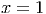

Exemplo 4.1.1 (Eliminação gaussiana sem pivotamento). Resolva o sistema

A eliminação gaussiana, também conhecida como escalonamento, é um método para resolver sistemas lineares. Este método consiste em manipular o sistema através de determinadas operações elementares, transformanda a matriz que representa o sistema em uma matriz triangular. Uma vez, triangularizado o sistema, a solução pode ser obtida via substituição regressiva. Naturalmente estas operações elementares devem preservar a solução do sistema e consistem em
Solução. A matriz completa do sistema é escrita como
 |
No primeiro passo, subtraímos da segunda linha o quádruplo da primeira e subtraímos da terceira linha o dobro da primeira linha:
 |
No segundo passo, permutamos a segunda linha com a terceira:
 |
Neste momento, a matriz já se encontra na forma triangular. Da terceira linha,
encontramos  , ou seja,
, ou seja,  . Substituindo na segunda equação,
temos
. Substituindo na segunda equação,
temos  , ou seja,
, ou seja,  e finalmente, da primeira linha,
e finalmente, da primeira linha,
 , resultando em
, resultando em  .
.

A eliminação gaussiana com pivotamento parcial consiste em fazer uma permutação de linhas de forma a escolher o maior pivô (em módulo) a cada passo.
Solução. A matriz completa do sistema é
 |
Encontramos  , ou seja,
, ou seja,  . Substituímos na segunda equação
e temos
. Substituímos na segunda equação
e temos  , ou seja,
, ou seja,  e, finalmente
e, finalmente  , resultando
em
, resultando
em  .
.

Solução. Construímos a matriz completa:

 ,
,  e
e  .
.

Exemplo 4.1.4 (Problema com elementos com grande diferença de escala).

 e
e
 :
:

Temos


Observe que a expressão obtida para  se aproximada de
se aproximada de  quando
quando  é pequeno:
é pequeno:

 depende justamente da diferença
depende justamente da diferença  :
:

Assim, quando  é pequeno, a primeira expressão, implementado
em um sistema de ponto flutuante de acurácia finita, produz
é pequeno, a primeira expressão, implementado
em um sistema de ponto flutuante de acurácia finita, produz  e,
consequentemente, a expressão para
e,
consequentemente, a expressão para  produz
produz  . Isto é, estamos
diante um problema de cancelamento catastrófico.
. Isto é, estamos
diante um problema de cancelamento catastrófico.
Agora, quando usamos a eliminação gaussiana com pivotamento parcial, fazemos uma permutação de linhas de forma a escolher o maior pivô a cada passo:

Continuando o procedimento, temos:


Observe que tais expressões são analiticamente idênticas às anteriores, no
entanto, são mais estáveis numericamente. Quando  converge a zero,
converge a zero,  converge a
converge a  , como no caso anterior. No entanto, mesmo que
, como no caso anterior. No entanto, mesmo que  , a segunda
expressão produz
, a segunda
expressão produz  , isto é, a aproximação
, isto é, a aproximação  não depende mais de
obter
não depende mais de
obter  com precisão.
com precisão.
E 4.1.1. Resolva o seguinte sistema de equações lineares

Resposta. Escrevemos o sistema na forma matricial e resolvemos:
![[ | ] [ | ] [ | ]
11 10 110 |−048 ∼ 10 −11 19|−048 ∼ 10 110 11 |205 ∼
0 10 1 |25 0 10 1| 25 0 − 1 9 |−48
[ 1 1 1 | 0 ] [ 1 1 1| 0 ]
∼ 0 10 1 | 25 ∼ 0 10 1|25 ∼
0 0 9.1 |−45.5 0 0 1|−5
[ 1 1 0 |5 ] [ 1 1 0 |5 ]
∼ 0 10 0 |30 ∼ 0 1 0 |3 ∼
0 0 1 |−5 0 0 1 |−5
[ 1 0 0| 2 ]
∼ 0 1 0| 3
0 0 1|−5](main1908x.png)
 ,
,  ,
, 
E 4.1.2. Resolva o seguinte sistema de equações lineares

E 4.1.5. Considere as matrizes


 sem usar o computador.
sem usar o computador.
 considerando
considerando  e obtenha a solução exata em função do parâmetro
e obtenha a solução exata em função do parâmetro  .
.
 .
.
 no Scilab usando pivotamento
parcial e depois sem usar pivotamento parcial para valores muito
pequenos de
no Scilab usando pivotamento
parcial e depois sem usar pivotamento parcial para valores muito
pequenos de  como
como  . O que você observa?
. O que você observa?Resposta.
![x= [4 3 2]T](main1929x.png)


 da cada equação do sistema original e temos:
da cada equação do sistema original e temos:

![xε =[4 3 2]T −-9ε-[1 1 1]T
1+3ε](main1934x.png)
E 4.1.6. Resolva o seguinte sistema de  equações lineares

 no Scilab e usando o
comando de contra-barra para resolvê-lo. Repita usando a rotina que implementa
eliminação gaussiana.
no Scilab e usando o
comando de contra-barra para resolvê-lo. Repita usando a rotina que implementa
eliminação gaussiana.
Resposta. ![x= [1.6890368 1.6890368 1.5823257 1.2667776 0.6333888]T](main1938x.png)
E 4.1.7. Encontre a inversa da matriz

Resposta.
![[ ]
1 1∕2 −1∕2
1∕3 −1∕2 1∕6
−1∕3 0 1∕3](main1940x.png)


 , então a matriz
, então a matriz  dada por:
dada por: